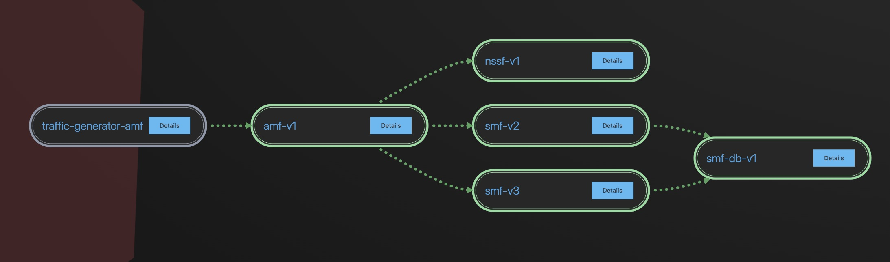
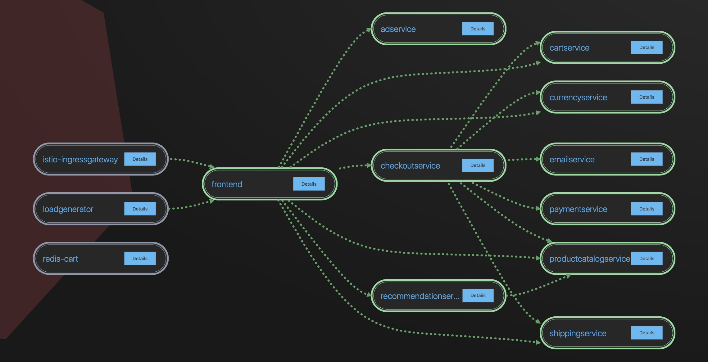
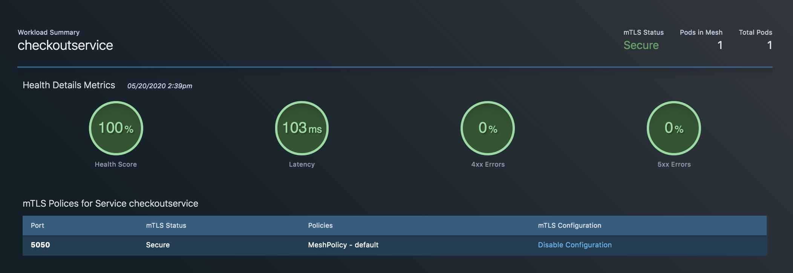

Modern Application Architecture Source | Edit on
Usecase 01: Aspen Mesh Observability, Visibility and Analytics¶
Objective:¶
Note
Demonstrate Aspen Mesh Service Mesh Observability, Visiblity and Analytics
Guide:¶
- Logon either to Aspen Mesh Cluster 1 or Aspen Mesh Cluster 2 Dashboard
- Walkthrough some of the deployed apps.
- Demonstrate Aspen Mesh analytic metrics
Example
  